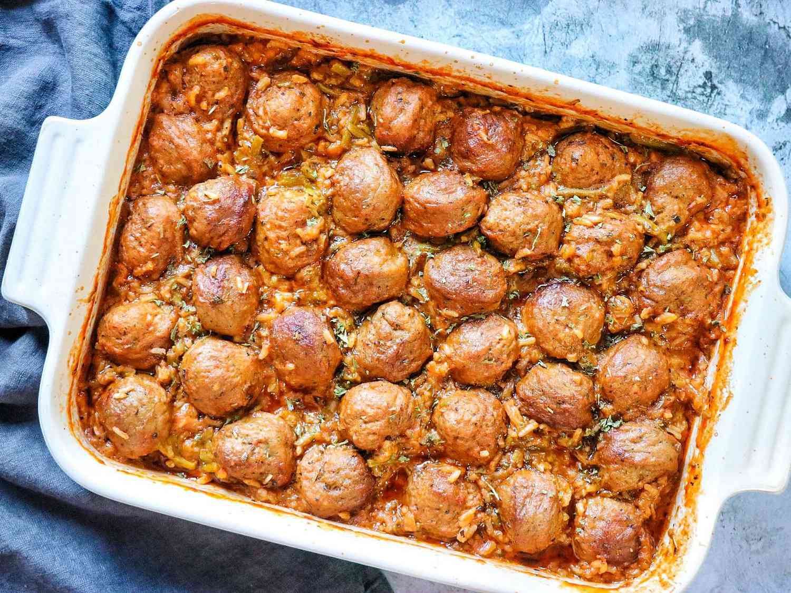

Meatball Casserole

When you have meatballs in the freezer to use up, this is a great go-to meal. I created it to feed two comfortably, and it can easily be doubled to feed a crowd.
Ingredients
- 8 ounces rotini pasta
- 1 (24 ounce) jar prepared marinara sauce
- 1 cup water
- ½ cup prepared pizza sauce
- ½ cup milk
- 10 frozen cooked meatballs, thawed
- ¼ cup grated Parmesan cheese, or to taste
Directions
- Preheat oven to 425 degrees F (220 degrees C).
- Stir rotini, marinara sauce, water, pizza sauce, and milk together in a bowl. Pour into a deep baking dish; pasta should be completely submerged in sauce. Cover dish tightly with foil.
- Bake in the preheated oven for 20 minutes; uncover and arrange meatballs on top, pushing them partially into pasta and sauce; cover tightly with foil.
- Bake until pasta is tender yet firm to the bite, 20 to 30 minutes more.
- Uncover; sprinkle with Parmesan cheese; return to oven for 5 minutes. Remove and let cool 5 minutes before serving.